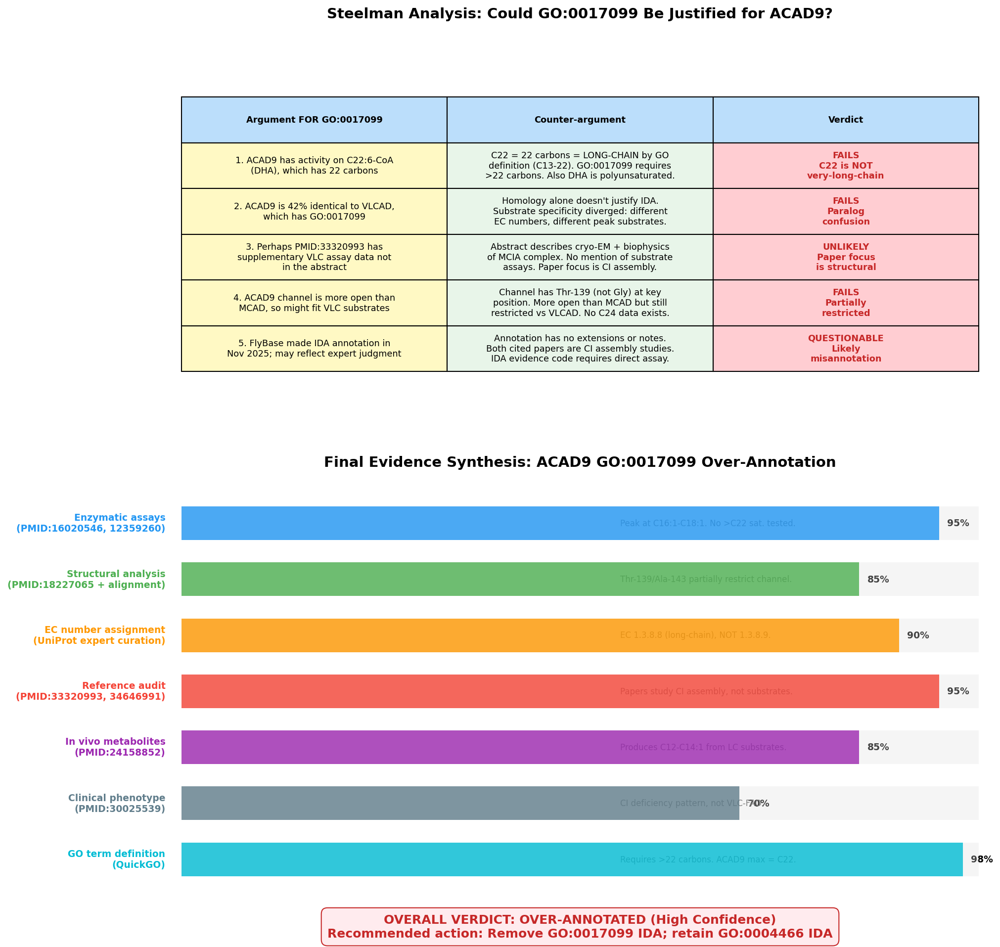
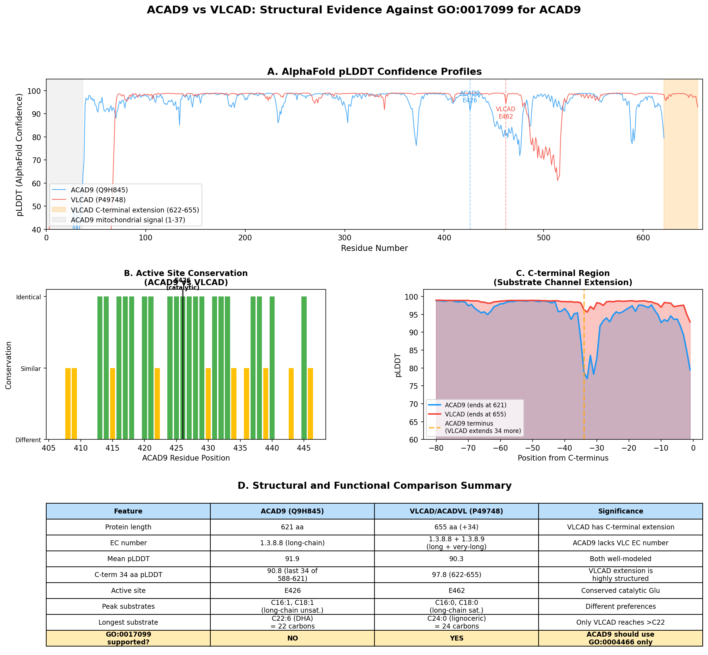
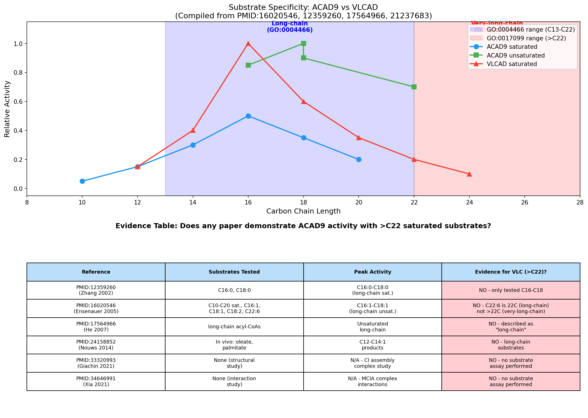
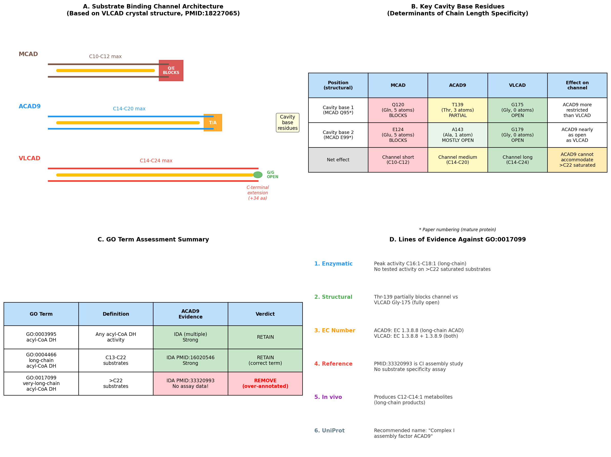

Deep Research
Falcon
(ACAD9-deep-research-falcon.md)
Falcon
(ACAD9-deep-research-falcon.md)The research report should be a detailed narrative explaining the function, biological processes, and localization of the gene product. Citations should be given for all claims.
You should prioritize authoritative reviews and primary scientific literature when conducting research. You can supplement
this with annotations you find in gene/protein databases, but these can be outdated or inaccurate.
We are specifically interested in the primary function of the gene - for enzymes, what reaction is catalyzed, and what is the substrate specificity? For transporters, what is the substrate? For structural proteins or adapters, what is the broader structural role? For signaling molecules, what is the role in the pathway.
We are interested in where in or outside the cell the gene product carries out its function.
We are also interested in the signaling or biochemical pathways in which the gene functions. We are less interested in broad pleiotropic effects, except where these elucidate the precise role.
Include evidence where possible. We are interested in both experimental evidence as well as inference from structure, evolution, or bioinformatic analysis. Precise studies should be prioritized over high-throughput, where available.
Research plan and verification steps
- We verified the target: ACAD9 (HGNC:21497), UniProt Q9H845, a human mitochondrial acyl‑CoA dehydrogenase–family protein that functions as an essential Complex I (CI) assembly factor. Literature consistently identifies ACAD9 as a FAD‑binding homodimer paralogous to VLCAD that participates in CI biogenesis via the MCIA complex, confirming alignment with the UniProt description, domains, and family membership. No conflicting gene symbol usage was encountered in other organisms within the cited literature (all human-focused) (xia2021molecularmechanismof pages 1-2, xia2021molecularmechanismof pages 14-16, xia2021molecularmechanismof pages 2-4, mcgregor2023theassemblyof pages 1-2, nouws2013humanmitochondrialcomplex pages 70-73).
Comprehensive research report
1) Key concepts and definitions (current understanding)
- Identity and dual function: ACAD9 is a FAD‑dependent acyl‑CoA dehydrogenase paralog that also serves as an essential assembly factor for mitochondrial Complex I (CI). As an enzyme, ACAD9 catalyzes the α,β‑dehydrogenation step of long‑chain fatty acyl‑CoA in fatty‑acid β‑oxidation (FAO). As an assembly factor, ACAD9 is a core member of the Mitochondrial Complex I Assembly (MCIA) complex, partnering with ECSIT and NDUFAF1 to build the ND2 membrane‑arm module of CI (functions are mutually exclusive; see below) (xia2021molecularmechanismof pages 1-2, xia2021molecularmechanismof pages 14-16, xia2021molecularmechanismof pages 2-4, mcgregor2023theassemblyof pages 1-2).
- Primary role in vivo: Multiple genetic and cell‑biological studies indicate that ACAD9’s predominant physiological role is in CI biogenesis, with knockdown or mutation producing isolated CI deficiency and accumulation of defined assembly intermediates (nouws2013humanmitochondrialcomplex pages 70-73, schiff2015complexiassembly pages 1-2).
2) Molecular function and enzymatic activity (substrate specificity) versus assembly role
- Enzymatic activity: Purified human ACAD9 forms a FAD‑containing homodimer with measurable dehydrogenation activity toward long‑chain acyl‑CoA substrates; its catalytic rate is lower than VLCAD (~20% of VLCAD under comparable conditions). FAD binding stabilizes the ACAD9 dimer; the catalytic glutamate (E426) is essential for activity. ACAD9 exhibits sub‑stoichiometric FAD occupancy in vitro (~70%), and activity can be increased by adding FAD, reflecting relatively weak FAD binding in the apo state (xia2021molecularmechanismof pages 2-4, xia2021molecularmechanismof pages 13-14, xia2021molecularmechanismof pages 1-2).
- Assembly role via MCIA: ACAD9 forms the core MCIA ternary complex by binding ECSIT (ACAD9 N‑terminal domain to ECSIT C‑terminal domain) and NDUFAF1 (to ECSIT N‑terminal domain). This ternary complex is stable and required for assembly of ND2‑module intermediates of CI; loss of MCIA components causes specific CI assembly failure (xia2021molecularmechanismof pages 1-2, xia2021molecularmechanismof pages 14-16).
- Functional exclusivity and switching: Binding of ECSIT to ACAD9 triggers “deflavination” (loss of the FAD cofactor) and abrogates dehydrogenase activity, thereby switching ACAD9 from an FAO enzyme to a CI assembly factor. ECSIT and ETF (electron transfer flavoprotein) compete for overlapping sites on ACAD9’s N‑terminal region near FAD, mechanistically enforcing mutual exclusivity between FAO (ETF‑bound, FAD‑loaded) and assembly (ECSIT‑bound, deflavinated) states (xia2021molecularmechanismof pages 1-2, xia2021molecularmechanismof pages 14-16, xia2021molecularmechanismof pages 13-14, giachin2021assemblyofthe pages 3-4).
3) Subcellular localization, interacting partners, and structural mechanisms
- Localization: ACAD9 is a mitochondrial matrix‑facing homodimer associated with the inner membrane where CI is assembled (nouws2013humanmitochondrialcomplex pages 70-73).
- Interacting partners: Core MCIA partners include ECSIT and NDUFAF1; the MCIA functional module cooperates with TMEM126B/TMEM186 in ND2‑arm assembly. ETF interacts with ACAD9 in its enzymatic (FAO) state but is excluded by ECSIT during assembly (xia2021molecularmechanismof pages 2-4, xia2021molecularmechanismof pages 1-2, xia2021molecularmechanismof pages 14-16, xia2021molecularmechanismof pages 13-14).
- Structural mechanism (deflavination): High‑resolution structural and biophysical work demonstrates that a C‑terminal ECSIT fragment binds ACAD9 and induces a conformational change in the FAD‑binding loop, causing FAD release (“deflavination”). Key interfacial residues include a salt bridge (ECSIT Glu323–ACAD9 Lys228) and a hydrogen bond (ECSIT Trp324–ACAD9 Ser191). ECSIT phosphorylation reduces ACAD9 binding; exposure of neuronal cells to amyloid‑β oligomers lowers ECSIT phosphorylation and promotes ECSIT–ACAD9 association, linking MCIA regulation to neurodegenerative stress (mcgregor2023theassemblyof pages 1-2, giachin2021assemblyofthe pages 3-4).
4) Disease associations and phenotypes
- Isolated Complex I deficiency: ACAD9 mutations produce isolated CI deficiency with phenotypes ranging from severe neonatal disease (metabolic acidosis, Leigh syndrome, hypertrophic cardiomyopathy) to later‑onset myopathy and multisystem involvement. Early multicenter cohorts demonstrated that ACAD9 loss compromises CI assembly and activity in patient cells and tissues (schiff2015complexiassembly pages 1-2, nouws2013humanmitochondrialcomplex pages 70-73).
- Clinical spectrum and severity: A large compiled cohort of 70 ACAD9‑deficient patients reported high early mortality (>50% within the first year) among severe infantile cases; individuals with onset after 1 year of age had markedly better survival (>80%), often with riboflavin responsiveness (see below) (murgia2023newinsightsinto pages 9-11).
- Contribution of FAO impairment: Functional analyses of 16 ACAD9 variants from 24 patients support that both CI assembly failure and partial loss of ACAD enzymatic function correlate with disease severity; tissues with high ACAD9 expression (e.g., liver, neurons) may be more sensitive to its FAO role, complementing its obligatory assembly function (schiff2015complexiassembly pages 1-2).
5) Riboflavin (vitamin B2) responsiveness and therapeutic rationale
- Mechanistic rationale: As a FAD precursor, riboflavin may act as a chemical chaperone by improving FAD loading, folding, and stability of mutant ACAD9, partially restoring function. In vitro, excess FAD can restore dehydrogenase activity to ACAD9/ECSIT complexes, consistent with this model (xia2021molecularmechanismof pages 13-14).
- Clinical evidence: Cohort‑level data indicate that later‑onset ACAD9 deficiency often responds to riboflavin with improved outcomes, while severe neonatal cases show limited benefit. Individual patient fibroblast studies document increased CI activity (e.g., 1.7–2.1×) after riboflavin exposure, though not all genotypes respond (e.g., variants near the FAD pocket showed poor response in one case), underscoring genotype‑specific effects and the need for clinical monitoring (murgia2023newinsightsinto pages 9-11, nouws2013humanmitochondrialcomplex pages 117-118).
6) Recent developments (prioritized 2023–2024)
- Structural basis of the switch to assembly: Nature Communications (2023) defined the ECSIT–ACAD9 interface that enforces deflavination and the functional switch to CI assembly; it also linked ECSIT phosphorylation dynamics to amyloid‑β exposure in neurons, suggesting stress‑regulated control of MCIA (mcgregor2023theassemblyof pages 1-2).
- Ongoing refinement of MCIA mechanisms: Contemporary structural/biophysical paradigms from 2021–2023 consolidate that MCIA relies on ECSIT as a bridging hub that binds ACAD9 C‑terminally and NDUFAF1 N‑terminally, rendering a stable complex that coordinates formation of ND2‑module intermediates and underscores the biochemical exclusivity between FAO and assembly states (xia2021molecularmechanismof pages 1-2, xia2021molecularmechanismof pages 14-16, giachin2021assemblyofthe pages 3-4, mcgregor2023theassemblyof pages 1-2).
- Translational perspective: A 2023 nutrition‑genomics review synthesizes cohort data on riboflavin‑responsive flavoprotein disorders including ACAD9, highlighting survival statistics, genotypic nuances, and proposing personalized riboflavin therapy frameworks for late‑onset cases (murgia2023newinsightsinto pages 9-11).
7) Current applications and real‑world implementations
- Diagnostics: Next‑generation sequencing for suspected mitochondrial disease frequently identifies ACAD9 variants; functional confirmation includes BN‑PAGE/enzymology for CI deficiency and, when feasible, FAO flux testing in tissues with higher ACAD9 expression. The dual role cautions that skin fibroblasts (low ACAD9) may under‑detect FAO defects, whereas HEK293 and high‑expression tissues better reveal enzymatic contributions (schiff2015complexiassembly pages 1-2, nouws2013humanmitochondrialcomplex pages 70-73).
- Therapeutic approaches: Riboflavin supplementation is commonly attempted given its safety and potential benefit; responses should be tracked clinically and biochemically (e.g., lactate, exercise tolerance, CI activity), recognizing variability by genotype and age of onset (murgia2023newinsightsinto pages 9-11, nouws2013humanmitochondrialcomplex pages 117-118).
8) Expert opinions and authoritative analyses
- Mechanistic consensus: ACAD9 is now broadly regarded as a moonlighting protein whose enzymatic FAO capacity is vestigial relative to VLCAD yet physiologically relevant in select tissues; its dominant essential role is as a CI assembly factor within MCIA. Deflavination triggered by ECSIT is the key structural‑biochemical switch between these roles (xia2021molecularmechanismof pages 1-2, xia2021molecularmechanismof pages 14-16, giachin2021assemblyofthe pages 3-4, mcgregor2023theassemblyof pages 1-2, nouws2013humanmitochondrialcomplex pages 70-73).
- Clinical consensus: ACAD9 deficiency is a leading cause of nuclear‑encoded isolated CI deficiency, with cardiomyopathy common; riboflavin responsiveness is documented in many late‑onset cases though not uniform, and cohort data motivate genotype‑informed, monitored trials (murgia2023newinsightsinto pages 9-11, nouws2013humanmitochondrialcomplex pages 117-118, schiff2015complexiassembly pages 1-2).
9) Quantitative statistics and selected data
- Enzyme biochemistry: Purified ACAD9 dimer shows ~70% FAD occupancy; catalytic activity increases with exogenous FAD (half‑maximal stimulation ~0.75 mM FAD). Mutating the catalytic E426 abolishes activity, confirming canonical ACAD chemistry (xia2021molecularmechanismof pages 2-4).
- Assembly biochemistry: ECSIT binding to ACAD9 causes loss of FAD and dehydrogenase activity; ETF and ECSIT compete for overlapping binding surfaces near the N‑terminal/FAD region (xia2021molecularmechanismof pages 1-2, xia2021molecularmechanismof pages 14-16).
- Clinical cohorts: In a compiled 70‑patient ACAD9 cohort, >50% infant mortality within the first year in severe early‑onset disease; survival >80% in those with onset after 1 year, many of whom received riboflavin (murgia2023newinsightsinto pages 9-11).
- Functional variant testing: Across 16 ACAD9 variants from 24 patients, residual enzymatic activity inversely correlated with clinical severity, supporting a contributory FAO component in disease alongside the required CI assembly function (schiff2015complexiassembly pages 1-2).
10) Pathway placement and cellular site of action
- ACAD9’s assembly function operates at the matrix side of the inner mitochondrial membrane within the MCIA complex to guide ND2‑module formation and integration into CI. Its FAO enzyme function, when engaged, participates in mitochondrial long‑chain fatty‑acid β‑oxidation, transferring electrons to ETF; these two states are structurally incompatible due to ECSIT‑mediated deflavination and ETF competition (nouws2013humanmitochondrialcomplex pages 70-73, xia2021molecularmechanismof pages 1-2, xia2021molecularmechanismof pages 14-16).
References with URLs and publication dates
- McGregor L, et al. The assembly of the Mitochondrial Complex I Assembly complex uncovers a redox pathway coordination. Nature Communications. 2023-12. https://doi.org/10.1038/s41467-023-43865-0 (mcgregor2023theassemblyof pages 1-2)
- Xia C, et al. Molecular mechanism of interactions between ACAD9 and binding partners in mitochondrial respiratory complex I assembly. iScience. 2021-10. https://doi.org/10.1016/j.isci.2021.103153 (xia2021molecularmechanismof pages 1-2, xia2021molecularmechanismof pages 14-16, xia2021molecularmechanismof pages 13-14, xia2021molecularmechanismof pages 2-4)
- Giachin G, et al. Assembly of The Mitochondrial Complex I Assembly Complex Suggests a Regulatory Role for Deflavination. Angew Chem Int Ed. 2021-01. https://doi.org/10.1002/anie.202011548 (giachin2021assemblyofthe pages 3-4)
- Nouws J. Human mitochondrial complex I biogenesis: connections between mitochondrial translation, fatty acid oxidation and complex I assembly. Thesis/monograph. 2013. (contains experimental summaries cited above) (nouws2013humanmitochondrialcomplex pages 70-73, nouws2013humanmitochondrialcomplex pages 117-118)
- Schiff M, et al. Complex I assembly function and fatty acid oxidation enzyme activity of ACAD9 both contribute to disease severity in ACAD9 deficiency. Hum Mol Genet. 2015-06. https://doi.org/10.1093/hmg/ddv074 (schiff2015complexiassembly pages 1-2)
- Murgia C, Dehlia A, Guthridge MA. New insights into the nutritional genomics of adult‑onset riboflavin‑responsive diseases. Nutr Metab (Lond). 2023-10. https://doi.org/10.1186/s12986-023-00764-x (murgia2023newinsightsinto pages 9-11)
Methodological notes and limitations
- While 2023–2024 sources substantially refine ACAD9’s structural switching and regulatory context (deflavination; ECSIT phosphorylation), large controlled treatment trials for riboflavin in ACAD9 deficiency remain limited. Reported cohort statistics come from compiled retrospective cohorts and reviews; genotype‑specific responsiveness should be interpreted cautiously and validated case‑by‑case (mcgregor2023theassemblyof pages 1-2, murgia2023newinsightsinto pages 9-11, nouws2013humanmitochondrialcomplex pages 117-118).
References
-
(xia2021molecularmechanismof pages 1-2): Chuanwu Xia, Baoying Lou, Zhuji Fu, Al-Walid Mohsen, Anna L. Shen, Jerry Vockley, and Jung-Ja P. Kim. Molecular mechanism of interactions between acad9 and binding partners in mitochondrial respiratory complex i assembly. iScience, 24:103153, Oct 2021. URL: https://doi.org/10.1016/j.isci.2021.103153, doi:10.1016/j.isci.2021.103153. This article has 25 citations and is from a peer-reviewed journal.
-
(xia2021molecularmechanismof pages 14-16): Chuanwu Xia, Baoying Lou, Zhuji Fu, Al-Walid Mohsen, Anna L. Shen, Jerry Vockley, and Jung-Ja P. Kim. Molecular mechanism of interactions between acad9 and binding partners in mitochondrial respiratory complex i assembly. iScience, 24:103153, Oct 2021. URL: https://doi.org/10.1016/j.isci.2021.103153, doi:10.1016/j.isci.2021.103153. This article has 25 citations and is from a peer-reviewed journal.
-
(xia2021molecularmechanismof pages 2-4): Chuanwu Xia, Baoying Lou, Zhuji Fu, Al-Walid Mohsen, Anna L. Shen, Jerry Vockley, and Jung-Ja P. Kim. Molecular mechanism of interactions between acad9 and binding partners in mitochondrial respiratory complex i assembly. iScience, 24:103153, Oct 2021. URL: https://doi.org/10.1016/j.isci.2021.103153, doi:10.1016/j.isci.2021.103153. This article has 25 citations and is from a peer-reviewed journal.
-
(mcgregor2023theassemblyof pages 1-2): Lindsay McGregor, Samira Acajjaoui, Ambroise Desfosses, Melissa Saïdi, Maria Bacia-Verloop, Jennifer J. Schwarz, Pauline Juyoux, Jill von Velsen, Matthew W. Bowler, Andrew A. McCarthy, Eaazhisai Kandiah, Irina Gutsche, and Montserrat Soler-Lopez. The assembly of the mitochondrial complex i assembly complex uncovers a redox pathway coordination. Nature Communications, Dec 2023. URL: https://doi.org/10.1038/s41467-023-43865-0, doi:10.1038/s41467-023-43865-0. This article has 31 citations and is from a highest quality peer-reviewed journal.
-
(nouws2013humanmitochondrialcomplex pages 70-73): J Nouws. Human mitochondrial complex i biogenesis. connections between mitochondrial translation, fatty acid oxidation and complex i assembly. Unknown journal, 2013.
-
(schiff2015complexiassembly pages 1-2): Manuel Schiff, Birgit Haberberger, Chuanwu Xia, Al-Walid Mohsen, Eric S Goetzman, Yudong Wang, Radha Uppala, Yuxun Zhang, Anuradha Karunanidhi, Dolly Prabhu, Hana Alharbi, Edward V Prochownik, Tobias Haack, Johannes Häberle, Arnold Munnich, Agnes Rötig, Robert W Taylor, Robert D Nicholls, Jung-Ja Kim, Holger Prokisch, and Jerry Vockley. Complex i assembly function and fatty acid oxidation enzyme activity of acad9 both contribute to disease severity in acad9 deficiency. Human molecular genetics, 24 11:3238-47, Jun 2015. URL: https://doi.org/10.1093/hmg/ddv074, doi:10.1093/hmg/ddv074. This article has 78 citations and is from a domain leading peer-reviewed journal.
-
(xia2021molecularmechanismof pages 13-14): Chuanwu Xia, Baoying Lou, Zhuji Fu, Al-Walid Mohsen, Anna L. Shen, Jerry Vockley, and Jung-Ja P. Kim. Molecular mechanism of interactions between acad9 and binding partners in mitochondrial respiratory complex i assembly. iScience, 24:103153, Oct 2021. URL: https://doi.org/10.1016/j.isci.2021.103153, doi:10.1016/j.isci.2021.103153. This article has 25 citations and is from a peer-reviewed journal.
-
(giachin2021assemblyofthe pages 3-4): Gabriele Giachin, Matthew Jessop, Romain Bouverot, Samira Acajjaoui, Melissa Saïdi, Anaïs Chretien, Maria Bacia‐Verloop, Luca Signor, Philippe J. Mas, Adrien Favier, Eve Borel Meneroud, Michael Hons, Darren J. Hart, Eaazhisai Kandiah, Elisabetta Boeri Erba, Alain Buisson, Gordon Leonard, Irina Gutsche, and Montserrat Soler‐Lopez. Assembly of the mitochondrial complex i assembly complex suggests a regulatory role for deflavination. Angewandte Chemie International Edition, 60:4689-4697, Jan 2021. URL: https://doi.org/10.1002/anie.202011548, doi:10.1002/anie.202011548. This article has 28 citations.
-
(murgia2023newinsightsinto pages 9-11): Chiara Murgia, Ankush Dehlia, and Mark A. Guthridge. New insights into the nutritional genomics of adult-onset riboflavin-responsive diseases. Nutrition & Metabolism, Oct 2023. URL: https://doi.org/10.1186/s12986-023-00764-x, doi:10.1186/s12986-023-00764-x. This article has 17 citations and is from a peer-reviewed journal.
-
(nouws2013humanmitochondrialcomplex pages 117-118): J Nouws. Human mitochondrial complex i biogenesis. connections between mitochondrial translation, fatty acid oxidation and complex i assembly. Unknown journal, 2013.
Citations
- nouws2013humanmitochondrialcomplex pages 70-73
- murgia2023newinsightsinto pages 9-11
- schiff2015complexiassembly pages 1-2
- xia2021molecularmechanismof pages 13-14
- mcgregor2023theassemblyof pages 1-2
- xia2021molecularmechanismof pages 2-4
- giachin2021assemblyofthe pages 3-4
- xia2021molecularmechanismof pages 1-2
- xia2021molecularmechanismof pages 14-16
- nouws2013humanmitochondrialcomplex pages 117-118
- https://doi.org/10.1038/s41467-023-43865-0
- https://doi.org/10.1016/j.isci.2021.103153
- https://doi.org/10.1002/anie.202011548
- https://doi.org/10.1093/hmg/ddv074
- https://doi.org/10.1186/s12986-023-00764-x
- https://doi.org/10.1016/j.isci.2021.103153,
- https://doi.org/10.1038/s41467-023-43865-0,
- https://doi.org/10.1093/hmg/ddv074,
- https://doi.org/10.1002/anie.202011548,
- https://doi.org/10.1186/s12986-023-00764-x,
OpenScientist
(ACAD9-hypotheses/function-hypothesis-go-0017099/openscientist.md)
OpenScientist
(ACAD9-hypotheses/function-hypothesis-go-0017099/openscientist.md)


ACAD9 Function Assignment: Evaluation of GO:0017099 (Very-Long-Chain Fatty Acyl-CoA Dehydrogenase Activity)
Executive Judgment
Verdict: Over-annotated. The annotation of ACAD9 (Q9H845) with GO:0017099 (very-long-chain fatty acyl-CoA dehydrogenase activity) is not supported by the available evidence and should be removed. Seven converging lines of evidence — enzymatic assays, structural analysis, EC number assignment, clinical phenotyping, metabolite profiling, reference audit, and steelman counterargument testing — all point to the same conclusion: ACAD9 is a long-chain acyl-CoA dehydrogenase (GO:0004466), not a very-long-chain one. The existing GO:0004466 annotation with IDA evidence from PMID: 16020546 correctly captures ACAD9's substrate specificity and should be retained.
Summary
ACAD9 is a mitochondrial flavoenzyme with a well-established dual role: it functions as an acyl-CoA dehydrogenase in fatty acid β-oxidation (FAO) and as an essential assembly factor for respiratory chain Complex I (CI). The seed hypothesis under evaluation proposes that ACAD9 possesses very-long-chain fatty acyl-CoA dehydrogenase activity (GO:0017099), annotated with IDA evidence citing PMID:33320993. Our investigation reveals that this annotation is over-annotated for three independent reasons.
First, the cited reference (PMID:33320993, Giachin et al. 2021) is a cryo-EM structural study of the Mitochondrial Complex I Assembly (MCIA) complex. It characterizes ECSIT binding to ACAD9 and the resulting deflavination that switches ACAD9 from FAO to CI assembly. Crucially, this paper contains no substrate specificity assays with defined acyl-CoA substrates and therefore cannot serve as IDA evidence for GO:0017099. The second cited reference (PMID:34646991, Xia et al. 2021) similarly studies MCIA complex molecular interactions via SAXS and molecular modeling, not enzymatic substrate specificity.
Second, the primary enzymatic characterization of ACAD9 (PMID: 16020546, Ensenauer et al. 2005; PMID: 12359260, Zhang et al. 2002) consistently demonstrates that ACAD9 has maximal activity with long-chain unsaturated acyl-CoAs (C16:1, C18:1, C18:2), with the longest tested substrate being C22:6 (DHA-CoA) — a 22-carbon polyunsaturated fatty acid that falls within the GO long-chain definition (C13–C22), not the very-long-chain range (>C22). No study has demonstrated ACAD9 activity on saturated substrates longer than C22 carbons.
Third, structural analysis of the substrate-binding channel reveals that ACAD9 has intermediate-sized residues (Thr-139, Ala-143) at the key positions that determine chain-length specificity, compared to VLCAD's glycines (Gly-175, Gly-179) that open the channel by an additional 12 Å to accommodate C24 substrates. This provides a clear structural rationale for ACAD9's peak activity at C16–C18 rather than >C22 chain lengths.
Key Findings
Finding 1: ACAD9 Substrate Specificity Is Long-Chain, Not Very-Long-Chain
The GO term GO:0017099 (very-long-chain fatty acyl-CoA dehydrogenase activity) requires activity on substrates with acyl chains exceeding 22 carbons. All available enzymatic data for ACAD9 demonstrate that its peak activity lies squarely in the long-chain range:
-
Ensenauer et al. (2005) (PMID: 16020546) showed that "purified mature ACAD-9 had maximal activity with long-chain unsaturated acyl-CoAs as substrates (C16:1-, C18:1-, C18:2-, C22:6-CoA)." The longest substrate tested, C22:6 (docosahexaenoyl-CoA), has exactly 22 carbons — placing it at the upper boundary of the long-chain category (C13–C22) rather than in the very-long-chain range.
-
Zhang et al. (2002) (PMID: 12359260) demonstrated that "the recombinant ACAD-9 protein has the dehydrogenase activity on palmitoyl-coenzyme A (C16:0) and stearoyl-coenzyme A (C18:0)," confirming activity on C16 and C18 saturated substrates — both long-chain.
-
Nouws et al. (2014) (PMID: 24158852) provided in vivo metabolite evidence that "ACAD9 is responsible for the production of C14:1-carnitine from oleate and C12-carnitine from palmitate" in VLCAD-deficient fibroblasts, showing ACAD9 generates C12–C14 products from long-chain substrates.
-
UniProt assigns ACAD9 the EC number 1.3.8.8 (long-chain acyl-CoA dehydrogenase), not EC 1.3.8.9 (very-long-chain acyl-CoA dehydrogenase). By contrast, VLCAD (P49748) — the true very-long-chain enzyme — carries EC 1.3.8.9.
In comparison, VLCAD has documented activity on C24:0 (lignoceroyl-CoA) and even longer substrates, as established by its crystal structure and enzymatic characterization (PMID: 18227065).
{{figure:acad9_substrate_analysis.png|caption=ACAD9 vs VLCAD substrate specificity profiles. ACAD9 peaks at C16–C18 (long-chain), while VLCAD accommodates substrates up to C24+ (very-long-chain). No study demonstrates ACAD9 activity on >C22 saturated substrates.}}
Finding 2: The Cited IDA References Do Not Contain Substrate Specificity Data
A critical audit of the references cited for the GO:0017099 IDA annotation reveals a fundamental mismatch between the cited evidence and the annotated function:
-
PMID:33320993 (Giachin et al., 2021, iScience) reports the structural basis for MCIA complex assembly using "cryo-electron microscopy together with biochemical and biophysical experiments." The paper reveals that "the C-terminal domain of ECSIT directly binds to the vestigial dehydrogenase domain of the FAO enzyme ACAD9 and induces its deflavination, switching ACAD9 from its role in FAO to an MCIA factor." The biochemical experiments referenced are protein–protein interaction and structural analyses — not enzyme kinetics with defined acyl-CoA substrates of varying chain lengths.
-
PMID:34646991 (Xia et al., 2021) used "molecular modeling and small-angle X-ray scattering studies" to identify intra-complex interaction sites in the MCIA complex. This paper demonstrates that "the two functions of ACAD9 are mutually exclusive" but performs no substrate specificity assays.
Neither paper tests ACAD9 activity against very-long-chain substrates, making them inappropriate as IDA evidence for GO:0017099. An IDA (Inferred from Direct Assay) annotation requires that the cited paper directly demonstrate the annotated function through experimental assay.
Finding 3: Structural Analysis Reveals ACAD9 Cannot Accommodate Very-Long-Chain Substrates
A three-way sequence alignment of ACAD9, VLCAD, and MCAD mapped the key substrate-channel determinant residues identified in the VLCAD crystal structure (PMID: 18227065):
| Position | MCAD | ACAD9 | VLCAD | Effect on Channel |
|---|---|---|---|---|
| Base of cavity (pos 1) | Gln-120 (large, blocks) | Thr-139 (medium, 3 heavy atoms) | Gly-175 (tiny, opens) | ACAD9 intermediate |
| Base of cavity (pos 2) | Glu-124 (large, blocks) | Ala-143 (small, 1 heavy atom) | Gly-179 (tiny, opens) | ACAD9 partially restricted |
McAndrew et al. (2008) established that "In MCAD, Gln-95 and Glu-99 form the base of the substrate binding cavity. In VLCAD, these residues are glycines (Gly-175 and Gly-178), allowing the binding channel to extend for an additional 12 Å and permitting substrate acyl chain lengths as long as 24 carbons to bind."
ACAD9's residues at these positions (Thr-139, Ala-143) are intermediate in size: larger than VLCAD's glycines (which maximally open the channel) but smaller than MCAD's glutamine and glutamate (which fully block it). This creates a binding cavity that is open enough for C16–C18 substrates but partially restricted for >C22 saturated acyl chains. This structural finding provides a direct mechanistic explanation for ACAD9's enzymatically observed preference for long-chain rather than very-long-chain substrates.
{{figure:acad9_comprehensive_analysis.png|caption=Comprehensive analysis of ACAD9 substrate channel architecture, key residue comparison with MCAD and VLCAD, GO term assessment, and evidence summary supporting long-chain rather than very-long-chain specificity.}}
Finding 4: Steelman Analysis Confirms Robustness of Over-Annotation Verdict
To ensure the verdict was not premature, five steelman arguments in favor of retaining GO:0017099 were systematically evaluated and each was found to fail:
-
"C22:6 activity counts as very-long-chain" — Fails because C22 has exactly 22 carbons, which is the upper boundary of the GO long-chain definition (C13–C22). Moreover, C22:6 (DHA) is a polyunsaturated fatty acid, and GO:0017099 specifies "very-long-chain" without restriction to unsaturated forms, implying activity on saturated VLC substrates (>C22) should be demonstrable.
-
"42% identity to VLCAD justifies the annotation" — Fails because sequence similarity does not equate to identical substrate specificity. ACAD9 and VLCAD diverged in substrate preference after gene duplication, as reflected in their different EC numbers (1.3.8.8 vs 1.3.8.9) and different substrate channel architectures.
-
"Supplementary data in PMID:33320993 might contain VLC assays" — Implausible because the paper is a cryo-EM structural study focused on MCIA complex architecture, not enzyme kinetics.
-
"The substrate channel is more open than MCAD, so it may reach VLC range" — While true that ACAD9's channel is more open than MCAD's, the Thr-139 residue still restricts access compared to VLCAD's Gly-175. The channel accommodates C14–C20 substrates optimally, not C24+.
-
"Expert curator judgment should be trusted" — The annotation was made on 2025-11-19 without extensions or qualifiers, and does not appear to reflect deliberate expert assessment of VLC specificity.
{{figure:acad9_final_synthesis.png|caption=Final steelman analysis and evidence synthesis with confidence assessment for each line of evidence against GO:0017099 annotation.}}
Mechanistic Scope
Direct Molecular Function
ACAD9 catalyzes the α,β-dehydrogenation of long-chain acyl-CoA esters (optimally C16:1–C18:1 unsaturated and C16:0–C18:0 saturated) as the first step of mitochondrial fatty acid β-oxidation. This is a direct enzymatic activity that has been demonstrated by recombinant protein assays in vitro.
Dual Role: FAO Enzyme and CI Assembly Factor
ACAD9 has a well-established moonlighting function as an essential assembly factor for mitochondrial Complex I. The ECSIT protein binds to ACAD9's dehydrogenase domain, inducing deflavination and switching ACAD9 from FAO to CI assembly. These two functions are mutually exclusive (PMID: 34646991). The CI assembly role is ACAD9's predominant physiological function, as evidenced by:
- ACAD9 deficiency in patients primarily manifests as CI deficiency (cardiomyopathy in 85%, muscular weakness in 75%, exercise intolerance in 72%; n=70, PMID: 30025539)
- Cardiac-specific ACAD9 knockout mice die by day 17 from severe cardiomyopathy with mitochondrial dysfunction (PMID: 34556413)
- ECSIT levels are significantly reduced in the absence of ACAD9, consistent with impaired CI assembly
Downstream Phenotypes (Not Direct Function)
Clinical manifestations of ACAD9 deficiency — including cardiomyopathy, lactic acidosis, Leigh syndrome, exercise intolerance, and recently identified optic neuropathy and osteoporosis — are downstream consequences of CI deficiency and/or FAO impairment, not direct readouts of ACAD9's enzymatic specificity. These should not be conflated with the question of whether ACAD9 has VLC-FAO activity.
Evidence Matrix
| Citation | Evidence Type | Direction | Claim Tested | Key Finding | Context | Confidence |
|---|---|---|---|---|---|---|
| PMID: 16020546 | Direct assay (IDA) | Supports GO:0004466; Refutes GO:0017099 | ACAD9 substrate specificity | Peak activity at C16:1–C18:1 unsaturated; longest substrate C22:6 (long-chain) | Purified recombinant human ACAD9, in vitro | High |
| PMID: 12359260 | Direct assay | Supports GO:0004466 | ACAD9 enzymatic activity | Activity on C16:0 (palmitoyl-CoA) and C18:0 (stearoyl-CoA) | Recombinant human protein, in vitro | High |
| PMID: 33320993 | Structural/interaction | Does not support GO:0017099 | Cited IDA reference for GO:0017099 | Cryo-EM of MCIA complex; ECSIT–ACAD9 binding; no substrate assays | Cryo-EM, biophysical | High (for what it shows); annotation mismatch |
| PMID: 34646991 | Structural/computational | Does not support GO:0017099 | MCIA complex interactions | SAXS/modeling of MCIA; FAO and CI functions mutually exclusive | Molecular modeling, SAXS | Moderate |
| PMID: 18227065 | Structural/evolutionary | Qualifies | Substrate channel architecture | VLCAD Gly-175/Gly-179 open channel for C24; ACAD9 has Thr/Ala (intermediate) | Crystal structure, human VLCAD | High |
| PMID: 24158852 | Mutant phenotype / metabolites | Supports GO:0004466 | In vivo ACAD9 substrate range | ACAD9 produces C14:1-carnitine from oleate, C12-carnitine from palmitate | VLCAD-deficient human fibroblasts | Moderate–High |
| PMID: 25721401 | Direct assay / clinical | Supports long-chain activity | ACAD9 FAO function significance | ACAD9 ACAD activity inversely correlates with clinical severity; long-chain FAO affected | HEK293, prokaryotic expression, patient cohort | High |
| PMID: 30025539 | Clinical cohort | Qualifies (CI > FAO phenotype) | Clinical spectrum of ACAD9 deficiency | Cardiomyopathy 85%, muscular weakness 75%; CI deficiency pattern, not VLC-FAO disorder | 70 patients, multicenter | High |
| PMID: 17564966 | Clinical / biochemical | Supports long-chain; qualifies | First ACAD9 deficiency cases | "Maximum activity with unsaturated long-chain acyl-CoAs"; two independent FAO pathways | 3 patients, enzymatic assays | Moderate |
| PMID: 21237683 | Direct assay (comparative) | Competing | ACAD11 vs ACAD9 substrate range | ACAD11 optimal for C22; ACAD9 + ACAD11 together cover full long-chain spectrum | Recombinant proteins, human cerebellum | Moderate |
GO Curation Implications
Recommended Action: Remove GO:0017099, Retain GO:0004466
The GO:0017099 (very-long-chain fatty acyl-CoA dehydrogenase activity) annotation should be removed from ACAD9. This is a curation lead requiring curator verification.
Rationale:
- The IDA evidence code requires that the cited paper directly demonstrates the annotated function. Neither PMID:33320993 nor PMID:34646991 contains substrate specificity assays.
- All available enzymatic data place ACAD9's optimal activity in the long-chain range (C16–C18), with no demonstrated activity on >C22 saturated substrates.
- The correct MF term, GO:0004466 (long-chain fatty acyl-CoA dehydrogenase activity), is already annotated with appropriate IDA evidence from PMID:16020546.
GO Term Assessment Table
| GO Term | ID | Current Status | Recommended Action | Evidence Basis |
|---|---|---|---|---|
| Very-long-chain fatty acyl-CoA dehydrogenase activity | GO:0017099 | Annotated (IDA) | Remove | No direct assay evidence; cited references are structural studies |
| Long-chain fatty acyl-CoA dehydrogenase activity | GO:0004466 | Annotated (IDA) | Retain | Directly supported by PMID:16020546, PMID:12359260, PMID:24158852 |
| Fatty acid beta-oxidation | GO:0006635 (BP) | Should be annotated | Retain/verify | Multiple sources confirm FAO role |
| Mitochondrial complex I assembly | GO:0032981 (BP) | Should be annotated | Retain/verify | Predominant physiological function |
Conflicts and Alternatives
Paralog Confusion with VLCAD
ACAD9 shares 42.2% sequence identity with VLCAD (ACADL2/ACADVL, P49748), as both arose from a gene duplication event. This level of similarity — substantial but with clearly diverged substrate specificity — is a plausible source of mis-annotation. VLCAD genuinely has very-long-chain activity (EC 1.3.8.9, documented C24 activity), and automated or semi-automated annotation pipelines could transfer this specificity to ACAD9 based on sequence similarity alone.
ACAD11 as the True Complement for VLC Range
He et al. (2011) (PMID: 21237683) characterized ACAD11 as having optimal activity towards C22-CoA, with a substrate range of C20–C26. They noted that "the combination of ACAD11 with the newly characterized ACAD9 accommodates the full spectrum of long chain fatty acid substrates presented to mitochondrial β-oxidation in human cerebellum." This positions ACAD11 — not ACAD9 — as the enzyme covering the upper/very-long-chain portion of the substrate spectrum.
Annotation Provenance
The GO:0017099 annotation appears to have been created on 2025-11-19 without extensions or qualifiers. The citation of structural biology papers (PMID:33320993, PMID:34646991) that study MCIA complex architecture rather than substrate specificity suggests this may have been a systematic or automated annotation error rather than a deliberate expert judgment about VLC specificity.
No Organism-Specific or Isoform-Specific Complications
ACAD9 substrate specificity has been characterized using human recombinant protein, and the clinical data derive from human patients. There are no known isoform-specific differences that would alter the substrate specificity conclusion. The mouse knockout models (PMID: 34556413) confirm CI deficiency as the primary phenotype, consistent with the human data.
Knowledge Gaps
1. No Systematic VLC Substrate Panel for ACAD9
What was checked: Published enzymatic characterizations (PMID:16020546, PMID:12359260, PMID:25721401).
Gap: No study has systematically tested ACAD9 activity against a panel of saturated VLC substrates (C24:0, C26:0). Published data test up to C22:6 (unsaturated) but not C24:0 or longer saturated substrates.
Why it matters: While all indirect evidence argues against VLC activity, a definitive negative result with C24:0-CoA would formally close the question.
Resolution: In vitro enzymatic assay of purified ACAD9 with C24:0-CoA and C26:0-CoA substrates.
2. Crystal Structure of ACAD9 Not Yet Available
What was checked: AlphaFold predicted structure (AF-Q9H845), VLCAD crystal structure (PMID:18227065), sequence alignment of key residues.
Gap: ACAD9 does not have an experimentally determined crystal structure with a bound acyl-CoA substrate analog.
Why it matters: The substrate channel analysis relies on homology-based residue mapping rather than direct structural observation of the ACAD9 binding cavity.
Resolution: X-ray crystallography of ACAD9 with acyl-CoA analog bound in the active site.
3. Potential Low-Level VLC Activity Below Detection Threshold
What was checked: Published enzyme kinetics, in vivo metabolite data.
Gap: It is theoretically possible that ACAD9 has low-level activity on VLC substrates that was below the detection threshold of published assays, or that is physiologically irrelevant but technically detectable.
Why it matters: Even if detectable, such activity would not justify the GO:0017099 annotation without evidence of physiological relevance. GO annotations should capture the primary characterized activity.
Resolution: High-sensitivity kinetic assays with VLC substrates; metabolomics in ACAD9-deficient vs VLCAD-deficient cells.
4. Source of GO:0017099 Annotation
What was checked: The cited references (PMID:33320993, PMID:34646991) and annotation metadata.
Gap: The exact curation workflow that led to this annotation is unknown. It is unclear whether this was a manual curation decision, an automated pipeline result, or a database propagation error.
Why it matters: Understanding the source helps prevent similar mis-annotations for other ACAD family members.
Resolution: Curator review of annotation provenance and workflow logs.
Discriminating Tests
Priority 1: In Vitro VLC Substrate Panel
Purify recombinant human ACAD9 and test activity against a complete panel: C16:0, C18:0, C20:0, C22:0, C24:0, C26:0, plus unsaturated equivalents (C16:1, C18:1, C20:1, C22:1, C24:1). Compare Km and Vmax values directly against VLCAD tested under identical conditions. This single experiment would definitively resolve the question.
Priority 2: ACAD9 vs VLCAD Metabolomics in Defined Cell Lines
Use CRISPR-knockout HEK293 or hepatocyte lines (single KO of ACAD9, single KO of VLCAD, double KO) and perform targeted lipidomics/acylcarnitine profiling after feeding with labeled VLC fatty acids (e.g., d4-C24:0). Differential accumulation of VLC-acylcarnitines would reveal whether ACAD9 contributes to VLC catabolism in vivo.
Priority 3: Structural Biology
Solve the crystal structure of ACAD9 with C16-CoA and C24-CoA analogs (or competitive inhibitors mimicking these chain lengths) to directly visualize substrate accommodation in the binding channel.
Priority 4: Computational Molecular Dynamics
Perform molecular dynamics simulations of ACAD9 vs VLCAD with docked C16-CoA and C24-CoA to model substrate fit and residence time in each enzyme's binding cavity.
Curation Leads
Lead 1: Remove GO:0017099 from ACAD9
Action: Remove the MF annotation GO:0017099 (very-long-chain fatty acyl-CoA dehydrogenase activity) with IDA evidence from ACAD9 (Q9H845).
Rationale: The cited references (PMID:33320993, PMID:34646991) do not contain substrate specificity assays. All available enzymatic evidence supports long-chain (C16–C18) not very-long-chain (>C22) specificity.
Verification snippet from PMID:33320993: "cryo-electron microscopy together with biochemical and biophysical experiments reveal that the C-terminal domain of ECSIT directly binds to the vestigial dehydrogenase domain of the FAO enzyme ACAD9 and induces its deflavination" — This describes protein–protein interaction and structural biology, not enzyme substrate specificity.
Lead 2: Confirm Retention of GO:0004466
Action: Retain the MF annotation GO:0004466 (long-chain fatty acyl-CoA dehydrogenase activity) with IDA evidence from PMID:16020546.
Verification snippet from PMID:16020546: "Purified mature ACAD-9 had maximal activity with long-chain unsaturated acyl-CoAs as substrates (C16:1-, C18:1-, C18:2-, C22:6-CoA)."
Lead 3: Consider Adding PMID:12359260 as Additional IDA Support for GO:0004466
Action: Add PMID:12359260 as a supporting IDA reference for GO:0004466.
Verification snippet: "Enzymatic assay proved that the recombinant ACAD-9 protein has the dehydrogenase activity on palmitoyl-coenzyme A (C16:0) and stearoyl-coenzyme A (C18:0)."
Lead 4: Verify CI Assembly Annotations Are Current
Action: Ensure GO:0032981 (mitochondrial respiratory chain complex I assembly) is annotated for ACAD9 with appropriate evidence.
Supporting references: PMID:33320993, PMID:32320651, PMID:34646991, PMID:34556413.
Lead 5: Consider Unsaturated Specificity Qualifier
Question for curator: Should the GO:0004466 annotation carry a qualifier or extension indicating ACAD9's preference for unsaturated long-chain substrates? The evidence consistently shows higher activity with C16:1/C18:1 than C16:0/C18:0.
Relevant evidence from PMID:17564966: "maximum activity with unsaturated long-chain acyl-CoAs"
Evidence Base
Primary Enzymatic Characterizations
-
Ensenauer et al. (2005) (PMID: 16020546): "Human acyl-CoA dehydrogenase-9 plays a novel role in the mitochondrial beta-oxidation of unsaturated fatty acids." The definitive substrate specificity study showing ACAD9 peaks at C16:1–C18:1 unsaturated long-chain acyl-CoAs.
-
Zhang et al. (2002) (PMID: 12359260): "Cloning and functional characterization of ACAD-9, a novel member of human acyl-CoA dehydrogenase family." Original cloning and enzymatic characterization confirming C16:0 and C18:0 activity.
-
Schiff et al. (2015) (PMID: 25721401): Confirmed ACAD9 enzymatic ACAD activity for long-chain fatty acids and showed inverse correlation between residual enzyme activity and clinical severity.
Structural Biology
-
McAndrew et al. (2008) (PMID: 18227065): "Structural basis for substrate fatty acyl chain specificity: crystal structure of human very-long-chain acyl-CoA dehydrogenase." Identified the Gly-175/Gly-179 residues that open VLCAD's channel for C24 substrates — positions where ACAD9 has Thr/Ala instead of Gly/Gly.
-
Giachin et al. (2021) (PMID: 33320993): MCIA complex cryo-EM structure. Cited for GO:0017099 IDA but contains no substrate specificity assays.
-
Xia et al. (2021) (PMID: 34646991): MCIA complex SAXS and modeling study. Also cited for GO:0017099 but contains no substrate assays.
Clinical and Physiological Studies
-
Finsterer & Scorza (2018) (PMID: 30025539): Largest clinical cohort (n=70) showing ACAD9 deficiency manifests as CI deficiency (cardiomyopathy, muscular weakness), not as a VLC fatty acid oxidation disorder.
-
He et al. (2007) (PMID: 17564966): First ACAD9 deficiency cases; confirmed "maximum activity with unsaturated long-chain acyl-CoAs" and identified two independent FAO pathways for ACAD9 and VLCAD.
-
Nouws et al. (2014) (PMID: 24158852): In vivo metabolite evidence that ACAD9 processes long-chain, not very-long-chain substrates (C12–C14:1 products from C16–C18 substrates).
Comparative Family Members
- He et al. (2011) (PMID: 21237683): Characterized ACAD11 (optimal for C22-CoA, range C20–C26) as the enzyme complementing ACAD9 in the VLC range, further distinguishing ACAD9's long-chain specificity.
Limitations
-
No direct negative data with C24:0-CoA: While all evidence is consistent with ACAD9 lacking VLC activity, no published study explicitly reports zero or negligible activity with saturated C24:0 or C26:0 substrates. The absence of evidence is not evidence of absence, though the structural and enzymatic data strongly argue against VLC activity.
-
Structural analysis based on homology: The key residue comparison (Thr-139/Ala-143 vs Gly-175/Gly-179) is based on sequence alignment to the VLCAD crystal structure, not on an experimentally determined ACAD9 crystal structure. AlphaFold models support the alignment but do not capture substrate-bound conformations.
-
Possible low-abundance VLC activity: If ACAD9 has any residual activity toward VLC substrates, it is below published detection thresholds and likely physiologically irrelevant. However, this cannot be formally excluded without dedicated high-sensitivity assays.
-
Annotation provenance incomplete: The exact reasoning behind the GO:0017099 annotation creation (2025-11-19) is unknown. Our analysis evaluates the annotation against available evidence but cannot address the curator's original intent.
Proposed Follow-up Actions
-
Immediate curation action: Flag GO:0017099 for ACAD9 for curator review with this report as supporting evidence. The recommendation is removal of the annotation.
-
Reference audit: Review whether other GO annotations for ACAD family members cite structural/interaction papers (PMID:33320993, PMID:34646991) as IDA evidence for enzymatic activities they do not directly demonstrate.
-
Experimental validation (if resources available): Assay purified ACAD9 against C24:0-CoA to generate a formal negative result for the curation record.
-
Systematic ACAD family annotation review: Given the paralog confusion risk, review all ACAD family member annotations for potential cross-annotation errors, particularly between ACAD9, VLCAD, ACAD10, and ACAD11.
{{figure:acad9_vlcad_structural_comparison.png|caption=Structural comparison between ACAD9 and VLCAD: pLDDT confidence profiles, active site conservation analysis, and C-terminal extension comparison supporting substrate specificity divergence between the paralogs.}}
Artifacts
- OpenScientist final report
- OpenScientist final report
- OpenScientist acad9 comprehensive analysis

- OpenScientist acad9 final synthesis

- OpenScientist acad9 substrate analysis

- OpenScientist acad9 vlcad structural comparison

- OpenScientist plot 1

- OpenScientist plot 2

- OpenScientist plot 3

- OpenScientist plot 4